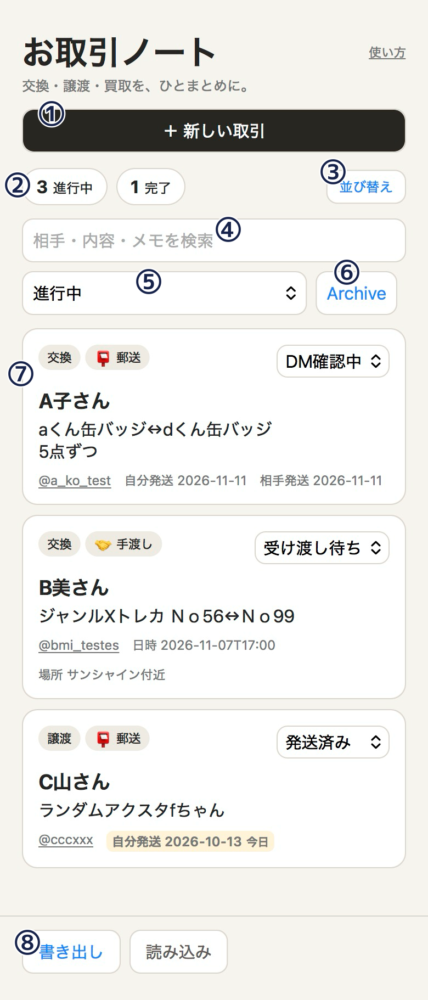
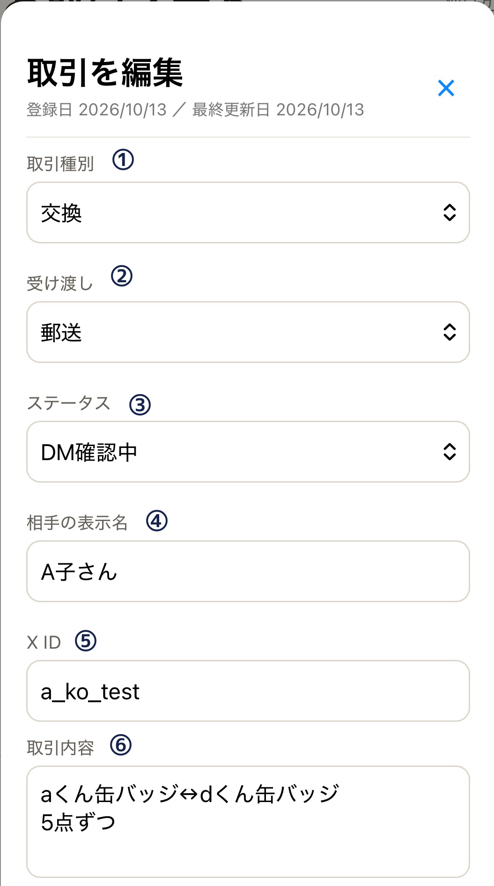
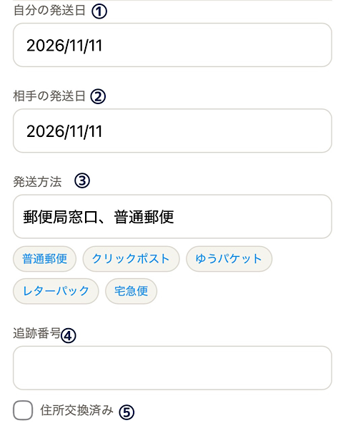
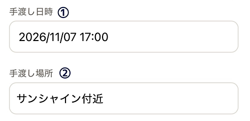
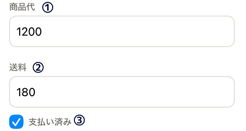

交換・譲渡・買取を、ひとまとめに。
X（旧Twitter）などでのグッズやお取引の進行状況を、シンプル＆安全に管理できる無料のWebアプリです。
面倒な登録やアプリインストールは不要。ブラウザで開いてすぐ使えます。

① 新しい取引を登録
新しいお取引データを登録します。
② 取引件数
登録されている取引のうち、「進行中」と「完了」の件数を表示します。
③ 並び替え
登録した取引の表示順を変更できます。
並び替えモードでは、各取引の「↑」「↓」ボタンで順番を変更できます。
④検索
相手の名前・X ID・取引内容・メモなどから、登録済みの取引を検索できます。
Archive内の取引も検索対象です。
⑤ 表示の絞り込み
「進行中」「完了」「すべて」から、一覧に表示する取引を絞り込めます。
初期表示は「進行中」です。
⑥ Archive
完了後にArchiveへ移した過去の取引を確認できます。
⑦ 取引一覧
登録した取引が一覧で表示されます。
ステータスは一覧から直接変更できます。カードをタップ／クリックすると詳細画面が開き、登録内容の確認・編集ができます。
⑧ データの書き出し・読み込み 登録データをファイルに書き出してバックアップしたり、書き出したデータを読み込んで復元したりできます。
取引を登録する
「+ 新しい取引」をタップし、相手の表示名・X ID（@xxx）・取引種別（交換/譲渡/買取）・取引詳細を入力します。

◆ が付いている項目は、入力内容が一覧画面にも表示されます。
① 取引種別 ◆
「交換」「譲渡」「買取」の3種類から選択できます。
② 受け渡し ◆
受け渡し方法を「郵送」「手渡し」から選択できます。
③ ステータス ◆
現在のお取引の進行状況に合わせて変更します。
④ 相手の表示名 ◆
お取引相手のXでの表示名を入力します。
⑤ X ID ◆
お取引相手のX IDを入力します。
入力したIDは一覧画面でリンクになり、タップ／クリックすると相手のXプロフィールを開けます。
⑥ 取引内容 ◆
交換するグッズなど、お取引内容の詳細を入力します。
一覧画面では先頭から2行まで表示されます。

① 自分の発送日 ◆
自分の発送予定日を入力します。
② 相手の発送日 ◆
お取引相手の発送予定日を入力します。
③ 発送方法
発送方法を入力します。
入力欄下のチップを押すと、該当する発送方法が入力されます。手入力での追加・修正も可能です。
④ 追跡番号
クリックポストや宅急便など、追跡番号がある場合に入力します。
⑤ 住所交換済み ◆
住所交換が完了したらチェックを付けます。チェック済みの場合、一覧に🏠マークが表示されます。

① 手渡し日時 ◆
手渡し予定の日時を入力します。
② 手渡し場所 ◆
手渡し予定の場所を入力します。

① 商品代
商品の代金を入力します。
② 送料
送料を入力します。
※手渡しの場合は表示されません。
③ 支払い済み ◆
支払いが完了したらチェックを付けます。チェック済みの場合、一覧に💰マークが表示されます。
進捗に合わせてステータスを切り替える
「DM確認中」「発送待ち」「完了」などをワンタップで更新！
進行状況は取引編集だけでなく一覧からも変更可能です。
住所交換済み（🏠）や支払い済み（💰）のチェックを入れると、一覧カードにも絵文字バッジが表示されて一目で進捗がわかります。
完了した取引を整理する
普段は「進行中」の取引だけが表示されるので、今やるべき作業に集中できます。
完了した取引は「完了表示」や「Archive」へ移動してスッキリ整理！
個人情報は一切不要
名前や住所などの入力は不要。
XのアカウントIDと取引内容・進捗だけをスマートに管理します。
取引データはブラウザ内に保存
登録した取引データはお使いのブラウザ内に保存されます。
お制作者側のサーバーへ送信・保存されることはません
完全無料・広告なし
画面を邪魔する広告についてはこれからも導入の予定はありません。
バックアップ・データ移行対応
「データの書き出し（JSON）」と「読み込み」に対応。
機種変更や万が一ブラウザ内の保存データが消えた時もも安心です。